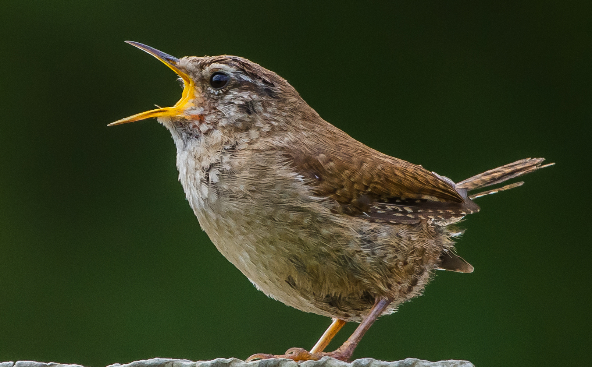
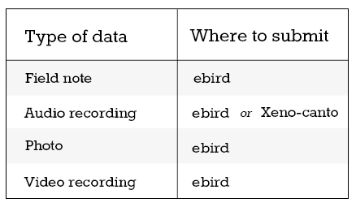
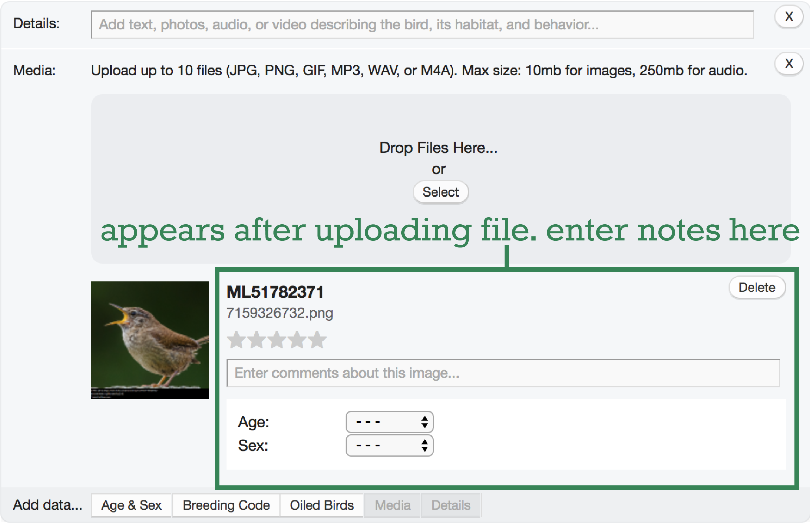
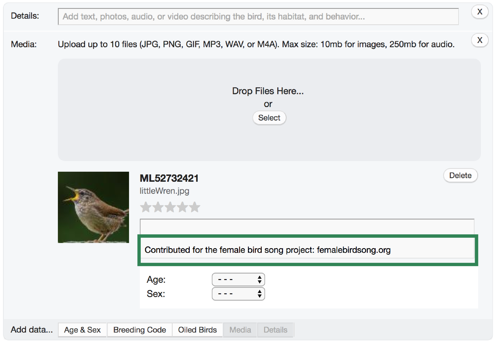
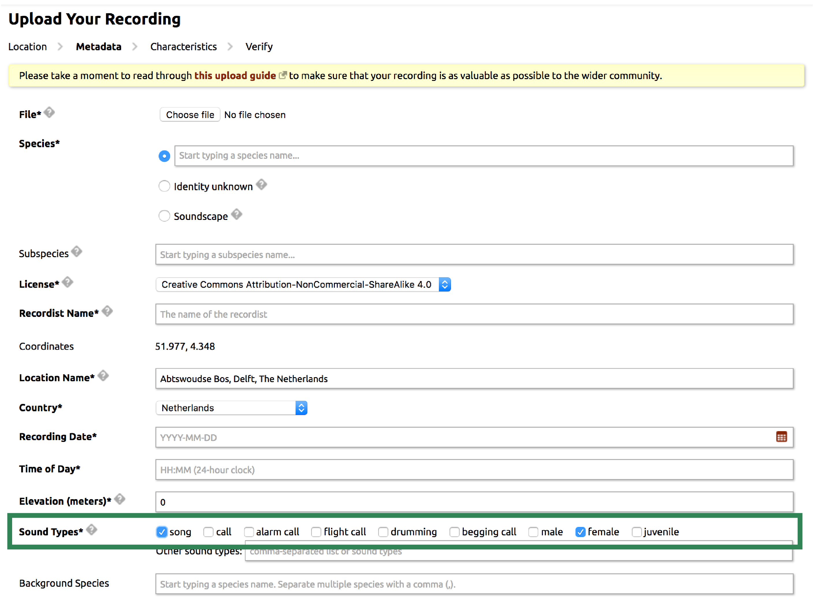
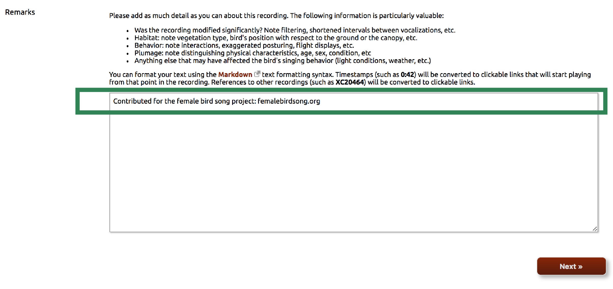

Be aware that female songbirds sing. Verify whether the birds you hear are female or male, then submit field notes, pictures, video, or audio recordings.






How to participate?
For your contribution to make the greatest impact, include the following information with your submission:
When you submit your data, fill in the field that requests the sex of the bird: Male or Female. If you are unsure, specify Unknown or Uncertain sex.
Sexing birds in the field can be tricky, so it is important for others to know what you saw. Include in the Notes/Remarks field how you knew the bird was a male or female. Or, better yet, include a picture or video. All information helps! Here are some tips for how to recognize females.
Use the phrase “Contributed for the female bird song project: femalebirdsong.org”. This does two things: (1) Including the words “female song” in the Notes/Remarks helps researchers find your submission and know undoubtedly that you observed a singing female (as opposed to female calling). (2) Using this exact phrase allows your contribution to be recognized as part of this project so that we, you, and others can follow your contribution.
We recommend submitting to major existing collections to ensure that your data are accessible and safely archived. This table summarizes where to submit depending on the type of data you have.
eBird is a major online repository of bird sightings and associated metadata (location, notes, pictures) as well as audio and video recordings. All media uploaded through eBird are automatically submitted to Macaulay Library, one of the most comprehensive collections of natural history audio, video, and photographs, housed at the Cornell Laboratory of Ornithology.
Xeno-canto, run by the Xeno-canto Foundation for Nature Sounds in cooperation with Naturalis Biodiversity Center in The Netherlands is the largest online database of bird audio recordings, aimed at documenting bird song diversity around the world.
You can submit observations with or without pictures, audio, or video to the eBird website or via the mobile app. Instructions vary slightly for submitting data with media versus without media; see the appropriate variation below. Media submitted to eBird are automatically contributed to Macaulay Library.
Register or sign-in at Xeno-canto’s website.
Sexually dimorphic species
For many temperate and some tropical birds, males and females look quite different, e.g., each sex has distinctively colored (dichromatic) feathers. In these species, a good field guide will help you separate females from males. Keep in mind that in some species, one-two year old males can look like females, so be sure to note how you knew the bird was a female. Some good electronic resources for identifying birds include:
Handbook of the Birds of the World Alive
BirdGuides.com
Cornell Lab of Ornithology’s Neotropical Birds
All About Birds
Merlin bird ID app
Sexually monomorphic species
In some species, males and females look the same to human observers (similar size, colors, and ornaments) and identifying males and females by sight might be nearly impossible. Here, many of the existing reports and recordings of female song come from researchers studying color-banded populations. This requires licensed, trained professionals to safely catch the birds, place light-weight colored bands on their legs, and release them for later identification. However, you can still contribute. Some communities may have citizen science programs where people can work alongside researchers to observe banded birds. Contact your local birding society to find out whether such a program exists in your area.
Other ways to document sex-specific song in monomorphic species include: captive birds at zoos and wildlife facilities, or carefully observing resident birds near your home. Sometimes one individual may be distinctive in some way (for example, an individual with an oddly shaped foot or beak, or unusual coloring, such as a patch of non-melanized, white feathers). Witnessing sex-specific activities that reveal the sex of the unique-looking individual would allow you to assign sex to that bird during future observations. Witnessing a copulation event is an excellent way to identify the female (which first solicits the copulation) versus the male (who will then sit on her back). Other breeding behaviors that might indicate sex include incubating (prolonged sitting on eggs) in a nest or carrying nesting material. Note, that whether incubating and nest-building are sex-specific and which sex does it depends on the species, so please add information on how you identified the sex of the singer with your submission.
In some species, males and females also overlap or alternate their songs in a duet. Seeing both members of a mated pair singing together in a duet allows the observer to know they are capturing male and female song; however, you might not know which bird is which sex.
Example recordings monomorphic species with females identified
Below are some excellent examples of recordists who used field marks or behaviors to identify the sex of the singer. Notice their methods for describing this and indicating when each sex sings. No matter how you determine the sex of the singer, it is important to include this information in your notes and which songs are by which sex in recordings with multiple birds. Also, see Field notes and equipment for tips on taking good field notes.
Example of using a distinguishing feature to determine sex of a female who lost her tail while incubating during nest predation.
Example 1 and example 2 (skip to 2:56 to hear notes about the female singer) of using nesting behavior to determine sex in New World orioles, a group of birds in which females primarily build the nest.
Example 1 and example 2 (skip to 10:12 to hear the recordist’s notes) of using known singing roles within a duet or two species in which the male and female parts of the duets are already known.
Field notes
Good field notes are immensely important for documenting female bird song (or any bird song). Within your recording or in the accompanying notes, it is important to clearly indicate how you determined sex of the singer and which vocalizations are by which sex. This can be done by writing what the female and male sounded like, imitating each singer at the end of the recording, stating after a female vocalizes that it was her, summarizing the sequence of events, or noting the time that the female sang. How you choose to indicate which bird is female may depend on the singing style of the bird, but doing so will make your recording most useful for research.
In some instances, you may not know which bird is female or male, or you may only have a hunch. It is still very helpful to indicate which bird made which sounds, especially for duets. You can do this by indicating when one bird stops and the other starts or by describing which part is by each bird. If you are unsure of the sex, but you think that you know, indicate this. Just clearly state that sex is presumed and what this assumption is based on. Additional notes on context, displays, and details not captured in audio recordings are very valuable and can help researchers address many different questions using your recordings.
See our section on Recognizing females for tips on how to identify females and some excellent examples of how recordists indicate which songs are by each sex.
Equipment
Both Xeno-canto and eBird accept media collected using a wide range of equipment. Even avid recordists are now recording bird songs with quality microphones attached to smart phones. Also, unless you watch very tame or large birds, good binoculars are often crucial. The below webpages include advice on taking good field notes and making high-quality recordings. If you are interested in learning more about recording equipment and techniques, below are some useful links to webpages.
Online resources on recording equipment, techniques, and field notes
- Macaulay Library webpages about field recording, recording equipment, and sound editing.
We greatly value our contributors! To thank and acknowledge our contributors, below are some tools you and others can use to follow your contributions:
Visually track your contribution
See where you and other contributors have recorded female song! Xeno-canto uploads can also be viewed by logging-in on Xeno-canto’s website and searching “rmk:femalebirdsong.org”. For your contribution to appear on the map, make sure to use the phrase “Contributed for the female bird song project: femalebirdsong.org” in the Notes/Remarks field when you submit.
XC Spotlights and ML Featured Recordings
If you record an especially interesting or rare example of female song, your recording could be selected to appear on the News section of our website, as a Xeno-canto Spotlight, or on Macaulay Library’s website. We are interested to hear from contributors. If you have a particularly interesting female song recording that you think qualifies, contact us.
Publications
We are interested to help contributors publish new reports of female bird song, especially for species where females are not known to sing. If you think you recorded female song for a species not known to have female song, contact us.
---